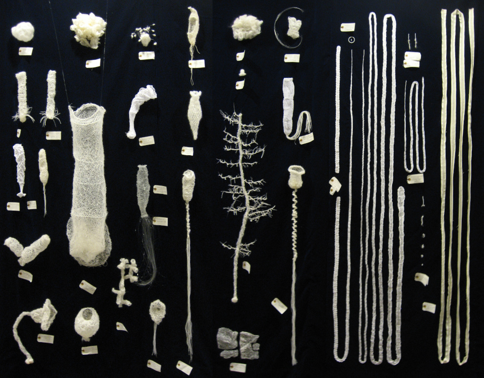

Statement
I visited Meguro Parasitological Museum for the first time just before the university entrance examination in 1988 and was impressed by the various shapes of white and beautiful parasites. In 1999, when I was working for a company, I was moved by the clean beauty of a very long specimen of fish tapeworm (Dibothriocephalus nihonkaiensis). Then I started crocheting in my own way, saying, "I want to make this tapeworm with lace." In 2011, I developed a unique knitting method combining crochet and needle knitting following photographs of specimens of Hexactenellida, collected by Dr. Isao Ijima, the founder of modern parasitology in Japan and the father of an aquarium. I was amazed to hear that the generic name for a representative glass sponge “Venus’ Flower Basket” is Euplectella, means “well plaited”. Since then, I have aimed at anatomically correct knitting of all living things.
1988年の大学受験直前に目黒寄生虫館を初めて訪れ、白くて美しい寄生虫の様々な形に強い印象を受けた。会社勤めの1999年に非常に長い日本海裂頭条虫(Dibothriocephalus nihonkaiensis)の清潔な美しさに心を打たれ、「このサナダムシをレースで編んでみたい」と自己流でかぎ針編みを始めた。 2011年に日本の近代寄生虫学の礎であり「水族館の父」とも呼ばれる飯島魁博士の収集した六放海綿の標本の写真を手本に、かぎ針編みと棒針編みの融合した独自の編み方を開発した。代表的なガラス海綿、カイロウドウケツの属名Euplectella が「よく編んだ」という意味だと聞いて嬉しく、以来解剖学的な正確さをもってあらゆる生物をむべく精進しています。
"Inner sea - a tribute to Dr.Isao Ijima"
mohair yern, cotton thread, velvet
W2000 H1500 D300mm 2011
works

Biological Laceworks
Lace works made with attention to anatomical accuracy
解剖学的な正確さに留意して作られたレース編み

Tableaus
oil, water, woodblock prints, drawings
油絵、水彩画、版画、ドローイング

Science Illustrations
博物画

Cartoons
Fermenting Microbes Cartoon "Go! Fermentation School" etc.
発酵微生物の4コマ漫画「進め！発酵学園」など